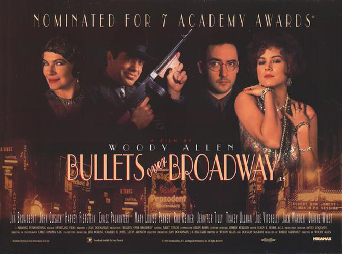
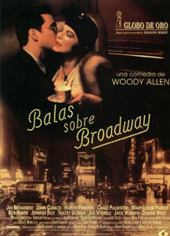
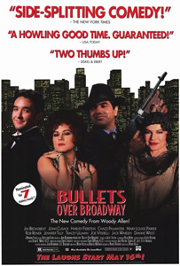
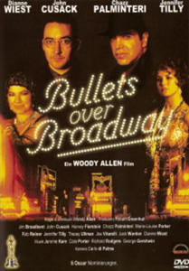

1920s Broadway. Playwright David Shayne considers himself an artist, and surrounds himself with like-minded people, most struggling financially as they create art for themselves, not the masses. David, however, believes the failure of his first two plays was because he gave up creative control to other people who didn't understand the material. As such, he wants to direct his just completed third play, "God of Our Fathers", insider gossip being that it may very well make David the toast of Broadway.
With David having no directing history, David's regular producer, Julian Marx, can't find any investors ... until a single investor who will finance the entire production comes onto the scene. He is Nick Valenti, a big time mobster, with the catch being that his dimwitted girlfriend, non-actress Olive Neal, get the lead role. A hesitant David and Julian, who are able to talk Nick into them giving Olive one of the two female supporting roles instead, go along with the scheme hoping that the three other actors hired will be able to make up for any deficiencies posed by Olive. What makes Olive's situation worse for David is that Nick has placed a bodyguard named Cheech - a typical thug who kills if need be - on Olive, he a constant presence at the theatre during rehearsals.
David is unaware or mindfully ignorant of issues concerning the other actors. Helen Sinclair, who has the lead, is a diva of an actress, who hasn't had a hit in years. Regardless, she is slyly manipulating David to make the role more glamorous befitting her real life persona than the frigid character he has written. Warner Purcell, the only male among the cast, has a roller coaster of a weight problem. Currently on a low, Warner tends to eat and eat and eat when when he gets stressed. And Eden Brent, a happy-go-lucky actress, has a constant companion in her pet chihuahua - Mr. Woofulls - whose presence is a constant thorn in Helen's side.
With one problem after another during rehearsals, one event seems to have the potential to turn the production around on a permanent upswing ... that is if David goes along with it. Regardless, there is still the potential for something to go violently wrong, with Nick solely looking out for Olive's interest and Cheech a constant presence, seeing and hearing everything that is happening.
The film's title may have been an homage to a lengthy sketch of the same title from the 1950s television show Caesar's Hour; one of Allen's first jobs in television was writing for Sid Caesar specials after the initial run of the show.
The film featured the last screen appearance of Benay Venuta. Allen cast her in a cameo role as a well-wishing wealthy theatre patron. She died of lung cancer months after the film opened.
This was the first film directed by Woody Allen not to feature Louise Lasser, Diane Keaton or Mia Farrow.
Dianne Wiest said she really struggled with Helen Sinclair's signature line. She finally decided to lower her voice when she said "Don't speak!" The lower she said it, the funnier it became.
To 2017, Bullets Over Broadway and Hannah and Her Sisters (1986) are the two Woody Allen films with most Oscar nominations. Bullets over Broadway won the Best Supporting Actress award for Dianne Wiest and have the following nominations: Best Actor in a Supporting Role (Chazz Palminteri); Best Actress in a Supporting Role (Jennifer Tilly); Best Director (Woody Allen); Best Screenplay Written Directly for the Screen (Woody Allen & Douglas McGrath); Best Art Direction-Set Decoration (Santo Loquasto & Susan Bode) and Best Costume Design (Jeffrey Kurland).
When Rocco, Nick Valenti, and Cheech pay their respects, the scene starts with an establishing shot of headstones. A large headstone prominently shows the name "Sorice." Jim Sorice, the Master Scenic Artist, has been the scenic artist in many Woody Allen movies. Cosmo Sorice is the Stand-by Scenic Artist.
The film's locales include the duplex co-op on the 22nd floor of 5 Tudor City Place in Manhattan.
"For me, love is very deep, sex only has to go a few inches."
"The joy of this bouncy, brainy Allen outing is how effortlessly he meshes his serious, clearly personal conundrums with the giddy formulas of backstage farce." - David Ansen : Newsweek
"Dianne Wiest elevates even the most esoteric argument in the film to a level of sublime entertainment." - Wesley Lovell : Cinema Sight


